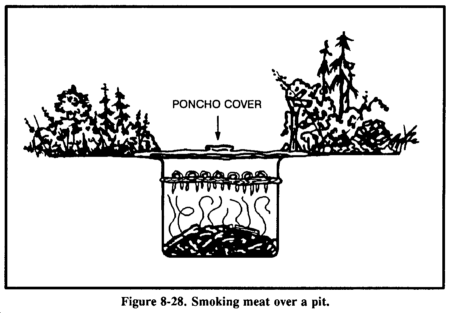

The key to trapping
With most small game it is easier to trap than to stalk and kill, in a survival situation setting traps also leaves you with time to attend to other duties like foraging or shelter building. Your aim is to either tangle, dangle, strangle or mangle your quarry. Putting up several traps around your shelter/retreat gives you more than one opportunity at a time to catch a meal, check all traps regularly to prevent escape and undue suffering. Starting a routine of regularly doing the rounds of your traps will provide you with a positive activity, however BE PATIENT, you will need to study the habits of animals to site traps effectively more intelligent creatures will initially be wary of anything new but will quickly come to accept the presence of traps.....That's when they walk into them!
Twitch-Up Snare
A simple twitch-up snare uses two forked sticks, each with a long and short leg. Bend the twitch-up and mark the trail below it. Drive the long leg of one forked stick firmly into the ground at that point. Ensure the cut on the short leg of this stick is parallel to the ground. Tie the long leg of the remaining forked stick to a piece of cordage secured to the twitch-up. Cut the short leg so that it catches on the short leg of the other forked stick. Extend a noose over the trail. Set the trap by bending the twitch-up and engaging the short legs of the forked sticks. When an animal catches its head in the noose, it pulls the forked sticks apart, allowing the twitch-up to spring up and hang the prey. Note: Do not use green sticks for the trigger. The sap that oozes out could glue them together.
Spring Snare
Game running through the snare disengages the trigger bar,and the prey is flung off the ground. Use on game trails or in gaps through rocks or hedges. Cut a notch in triggerbar (a) to fit upright (b). Drive upright into ground. Attach snare to trigger bar, then trigger bar to sapling.
Baited Snare
Construct as for spring snare but using the release mechanism shown. The bait support should be only lightly driven into the ground as it must fly away with the snare.
Leg Snare
Push FIRMLY a natural fork or two sticks tied together into the ground. The line from a sapling is tied to a wooden toggle and the toggle passed under the fork. When the game takes the bait, attached to a separate stick, it falls away releasing the toggle which flies up taking the snare and the game with it. Large versions are amongst the best snares for heavy game.
Platform Trap
Site over a small depression on the game trail. Snares on the platforms either side, when the platform is depressed the trigger is released and the game held firmly by the leg. For smaller, lighter game use the mechanism shown in (a), displacing either the bottom bar or the toggle will trigger the trap.
Deadfall
A simple and effective deadfall trap, can be made to any size. A horizontal bait bar is is balanced at right angles to an upright with a lock bar, which supports a rock or other heavy weight pivoting around the tip of the upright.
Paiute Deadfall
The Paiute deadfall is similar to the Deadfall, but uses a piece of cordage and a catch stick. It has the advantage of being easier to set than the normal Deadfall. Tie one end of a piece of cordage to the lower end of the diagonal stick. Tie the other end of the cordage to another stick about 5 centimeters long. This 5-centimeter stick is the catch stick. Bring the cord halfway around the vertical stick with the catch stick at a 90-degree angle. Place the bait stick with one end against the drop weight, or a peg driven into the ground, and the other against the catch stick. When a prey disturbs the bait stick, it falls free, releasing the catch stick. As the diagonal stick flies up, the weight falls, crushing the prey.
Bow Trap
A bow trap is one of the deadliest traps. It is dangerous to man as well as animals. To construct this trap, build a bow and anchor it to the ground with pegs. Adjust the aiming point as you anchor the bow. Lash a toggle stick to the trigger stick. Two upright sticks driven into the ground hold the trigger stick in place at a point where the toggle stick will engage the pulled bow string. Place a catch stick between the toggle stick and a stake driven into the ground. Tie a trip wire or cordage to the catch stick and route it around stakes and across the game trail where you tie it off. When the prey trips the trip wire, the bow looses an arrow into it. A notch in the bow serves to help aim the arrow. WARNING - This is a lethal trap. Approach it with caution and from the rear only!
Pig Spear Shaft
To construct the pig spear shaft, select a stout pole about 2.5 meters long. At the smaller end, firmly lash several small stakes. Lash the large end tightly to a tree along the game trail. Tie a length of cordage to another tree across the trail. Tie a sturdy, smooth stick to the other end of the cord. From the first tree, tie a trip wire or cord low to the ground, stretch it across the trail, and tie it to a catch stick. Make a slip ring from vines or other suitable material. Encircle the trip wire and the smooth stick with the slip ring. Emplace one end of another smooth stick within the slip ring and its other end against the second tree. Pull the smaller end of the spear shaft across the trail and position it between the short cord and the smooth stick. As the animal trips the trip wire, the catch stick pulls the slip ring off the smooth sticks, releasing the spear shaft that springs across the trail and impales the prey against the tree. WARNING - This is a lethal trap. Approach it with caution!
Tripwire Deadfall
A heavy log is suspended over a busy game trail, trips the wire and pulls a retaining bar from under two short pegs secured in a tree trunk. Keep the pegs as short as possible so that the bar will disengage easily.
Spear Deadfall
Same as tripwire deadfall but utilizing rocks to add weight and sharpened sticks to add trauma to the crushing blow.
Sprung Spear
This is a VERY dangerous trap, it should always be constructed and approached from behind the spring of the trap, only attempt if you are confident that your cordage and other materials are strong enough. A springy shaft with spear attached is suspended over a trail. A slip ring made of SMOOTH material is attached to a trip wire and acts as a release mechanism. A toggle (a) and short line to a fixed upright hold the sprung shaft in tension. A further rod through the ring is tensed between the nearside of the sprung shaft and the far face of the upright, securing until tripped.
Baited Hole Noose
This trap is very useful for scavengers, drive 4 sharpened sticks into the pit, through the edges. Lay a noose across them attached to a peg outside the pit.
Drag Noose
Use a drag noose on an animal run. Place forked sticks on either side of the run and lay a sturdy cross member across them. Tie the noose to the cross member and hang it at a height above the animal's head. (Nooses designed to catch by the head should never be low enough for the prey to step into with a foot.) As the noose tightens around the animal's neck, the animal pulls the cross member from the forked sticks and drags it along. The surrounding vegetation quickly catches the cross member and the animal becomes entangled.
Squirrel Pole
A squirrel pole is a long pole placed against a tree in an area showing a lot of squirrel activity. Place several wire nooses along the top and sides of the pole so that a squirrel trying to go up or down the pole will have to pass through one or more of them. Position the nooses (5 to 6 centimeters in diameter) about 2.5 centimeters off the pole. Place the top and bottom wire nooses 45 centimeters from the top and bottom of the pole to prevent the squirrel from getting its feet on a solid surface. If this happens, the squirrel will chew through the wire. Squirrels are naturally curious. After an initial period of caution, they will try to go up or down the pole and will get caught in a noose. The struggling animal will soon fall from the pole and strangle. Other squirrels will soon follow and, in this way, you can catch several squirrels. You can emplace multiple poles to increase the catch.
Ojibwa Bird Pole
An Ojibwa bird pole is a snare used by native Americans for centuries. To be effective, place it in a relatively open area away from tall trees. For best results, pick a spot near feeding areas, dusting areas, or watering holes. Cut a pole 1.8 to 2.1 meters long and trim away all limbs and foliage. Do not use resinous wood such as pine. Sharpen the upper end to a point, then drill a small diameter hole 5 to 7.5 centimeters down from the top. Cut a small stick 10 to 15 centimeters long and shape one end so that it will almost fit into the hole. This is the perch. Plant the long pole in the ground with the pointed end up. Tie a small weight, about equal to the weight of the targeted species, to a length of cordage. Pass the free end of the cordage through the hole, and tie a slip noose that covers the perch. Tie a single overhand knot in the cordage and place the perch against the hole. Allow the cordage to slip through the hole until the overhand knot rests against the pole and the top of the perch. The tension of the overhand knot against the pole and perch will hold the perch in position. Spread the noose over the perch, ensuring it covers the perch and drapes over on both sides. Most birds prefer to rest on something above ground and will land on the perch. As soon as the bird lands, the perch will fall, releasing the over-hand knot and allowing the weight to drop. The noose will tighten around the bird's feet, capturing it. If the weight is too heavy, it will cut the bird's feet off, allowing it to escape.
Bottle Trap
A bottle trap is a simple trap for mice and voles. Dig a hole 30 to 45 centimeters deep that is wider at the bottom than at the top. Make the top of the hole as small as possible. Place a piece of bark or wood over the hole with small stones under it to hold it up 2.5 to 5 centimeters off the ground. Mice or voles will hide under the cover to escape danger and fall into the hole. They cannot climb out because of the wall's backward slope. Use caution when checking this trap; it is an excellent hiding place for snakes.
Noosing Wand
A noose stick or "noosing wand" is useful for capturing roosting birds or small mammals. It requires a patient operator. This wand is more a weapon than a trap. It consists of a pole (as long as you can effectively handle) with a slip noose of wire or stiff cordage at the small end. To catch an animal, you slip the noose over the neck of a roosting bird and pull it tight. You can also place it over a den hole and hide in a nearby blind. When the animal emerges from the den, you jerk the pole to tighten the noose and thus capture the animal. Carry a stout club to kill the prey.
Just a Reminder
These traps can kill, and yes, some can kill a HUMAN so, if you must practice:
Don't take children.
Don't practise in the cold or bad weather.
Don't practive under the influence of drugs or alcohol.
BE VERY CAREFUL ! Especially with the Sprung Spear.
Snakes
To skin a snake, first cut off its head and bury it. Then cut the skin down the body 15 to 20 centimeters. Peel the skin back, then grasp the skin in one hand and the body in the other and pull apart. On large, bulky snakes it may be necessary to slit the belly skin. Cook snakes in the same manner as small game. Remove the entrails and discard. Cut the snake into small sections and boil or roast it.
Birds
After killing the bird, remove its feathers by either plucking or skinning. Remember, skinning removes some of the food value. Open up the body cavity and remove its entrails, saving the craw (in seed-eating birds), heart, and liver. Cut off the feet. Cook by boiling or roasting over a spit. Before cooking scavenger birds, boil them at least 20 minutes to kill parasites.
Skinning and Butchering Game
Bleed the animal by cutting its throat. If possible, clean the carcass near a stream. Place the carcass belly up and split the hide from throat to tail, cutting around all sexual organs. Remove the musk glands at points A and B to avoid tainting the meat. For smaller mammals, cut the hide around the body and insert two fingers under the hide on both sides of the cut and pull both pieces off. Note: When cutting the hide, insert the knife blade under the skin and turn the blade up so that only the hide gets cut. This will also prevent cutting hair and getting it on the meat.
Remove the entrails from smaller game by splitting the body open and pulling them out with the fingers. Do not forget the chest cavity. For larger game, cut the gullet away from the diaphragm. Roll the entrails out of the body. Cut around the anus, then reach into the lower abdominal cavity, grasp the lower intestine, and pull to remove. Remove the urine bladder by pinching it off and cutting it below the fingers. If you spill urine on the meat, wash it to avoid tainting the meat. Save the heart and liver. Cut these open and inspect for signs of worms or other parasites. Also inspect the liver's color; it could indicate a diseased animal. The liver's surface should be smooth and wet and its color deep red or purple. If the liver appears diseased, discard it. However, a diseased liver does not indicate you cannot eat the muscle tissue. Cut along each leg from above the foot to the previously made body cut. Remove the hide by pulling it away from the carcass, cutting the connective tissue where necessary. Cut off the head and feet.
Cut larger game into manageable pieces. First, slice the muscle tissue connecting the front legs to the body. There are no bones or joints connecting the front legs to the body on four-legged animals. Cut the hindquarters off where they join the body. You must cut around a large bone at the top of the leg and cut to the ball and socket hip joint. Cut the ligaments around the joint and bend it back to separate it. Remove the large muscles (the tenderloin) that lie on either side of the spine. Separate the ribs from the backbone. There is less work and less wear on your knife if you break the ribs first, then cut through the breaks.
Cook large meat pieces over a spit or boil them. You can stew or boil smaller pieces, particularly those that remain attached to bone after the initial butchering, as soup or broth. You can cook body organs such as the heart, liver, pancreas, spleen, and kidneys using the same methods as for muscle meat. You can also cook and eat the brain. Cut the tongue out, skin it, boil it until tender, and eat it.
Smoking Meat

To smoke meat, prepare an enclosure around a fire. Two ponchos snapped together will work. The fire does not need to be big or hot. The intent is to produce smoke, not heat. Do not use resinous wood in the fire because its smoke will ruin the meat. Use hardwoods to produce good smoke. The wood should be somewhat green. If it is too dry, soak it. Cut the meat into thin slices, no more than 6 centimeters thick, and drape them over a framework. Make sure none of the meat touches another piece. Keep the poncho enclosure around the meat to hold the smoke and keep a close watch on the fire. Do not let the fire get too hot. Meat smoked overnight in this manner will last about 1 week. Two days of continuous smoking will preserve the meat for 2 to 4 weeks. Properly smoked meat will look like a dark, curled, brittle stick and you can eat it without further cooking. You can also use a pit to smoke meat.
Drying Meat
To preserve meat by drying, cut it into 6-millimeter strips with the grain. Hang the meat strips on a rack in a sunny location with good air flow. Keep the strips out of the reach of animals and cover them to keep blowflies off. Allow the meat to dry thoroughly before eating. Properly dried meat will have a dry, crisp texture and will not feel cool to the touch.
Other Preservation Methods
You can also preserve meats using the freezing or brine and salt methods.
Freezing
In cold climates, you can freeze and keep meat indefinitely. Freezing is not a means of preparing meat. You must still cook it before eating.
Brine and Salt
You can preserve meat by soaking it thoroughly in a saltwater solution. The solution must cover the meat. You can also use salt by itself. Wash off the salt before cooking.
This information may not be reproduced without permission.